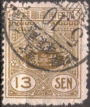
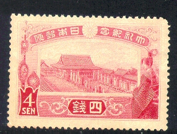

{kind=link}
{kind=link}

Return To Catalogue - Japan 1871-1875 - Japan 1876-1899
Note: on my website many of the
pictures can not be seen! They are of course present in the
catalogue;
contact me if you want to purchase it.
For issues of Japan from 1876 to 1899, click here.
3 s red
3 s red
1 1/2 s blue 3 s red


5 Y green 10 Y violet




1/2 s brown 1 s orange 1 1/2 s blue 2 s green 3 s red 4 s red 5 s violet 6 s brown (1919) 8 s grey (1919) 10 s blue 13 s brown (1925) 20 s lilac 25 s olive 30 s brown (1919) 30 s orange and green (1929) 50 s brown (1919) 50 s brown and blue (1929) 1 Y green and lilac Airmail, overprinted with an aeroplane (1919)
1 1/2 s blue (overprint red) 3 s red (overprint blue)
These stamps were used overprinted in japanese caracters in China.
In 1915 a military stamp was issued, the 3 s with overprinted with two Japanese characters:

1 1/2 s red and green 3 s orange and lilac 4 s red 10 s blue
1 1/2 s green, yellow and red 3 s red and yellow (design as 1 1/2 s) 10 s blue (2 shades)
1 1/2 s brown 3 s green 4 s red 10 s blue
1 1/2 s lilac 3 s red
1 1/2 s violet 3 s red
Flags 1 1/2 s green and red 4 s red (two shades on one stamp) Postoffice in Tokio 3 s brown 10 s blue
1 1/2 s violet 3 s grey 4 s red 10 s blue
4 s green 8 s red 20 s blue

1/2 s orange 3 s lilac
1 1/2 s violet and green 3 s red and blue 8 s red 20 s blue
This issue was withdrawn, since most of the stock was destroyed during an earthquake. The remainders were given to government officials.